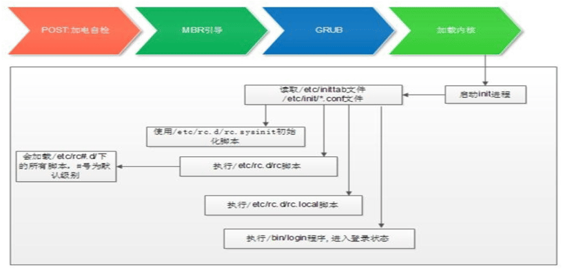
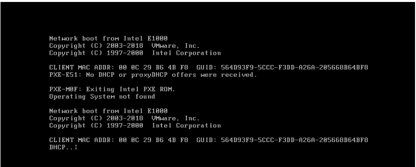
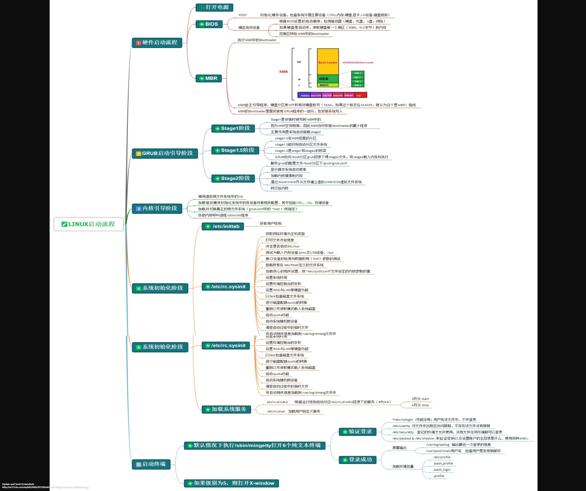
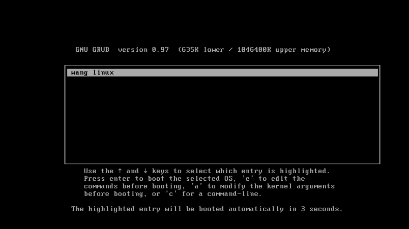
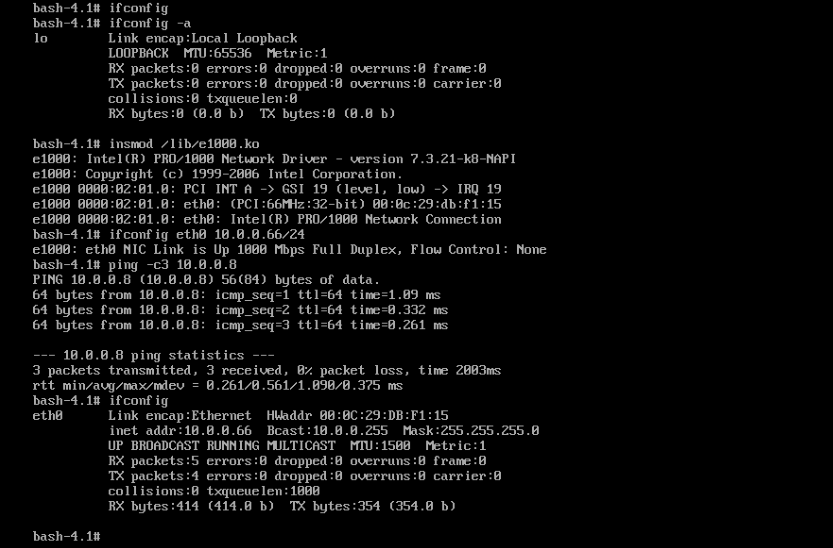
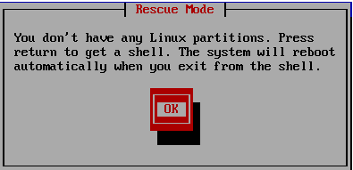
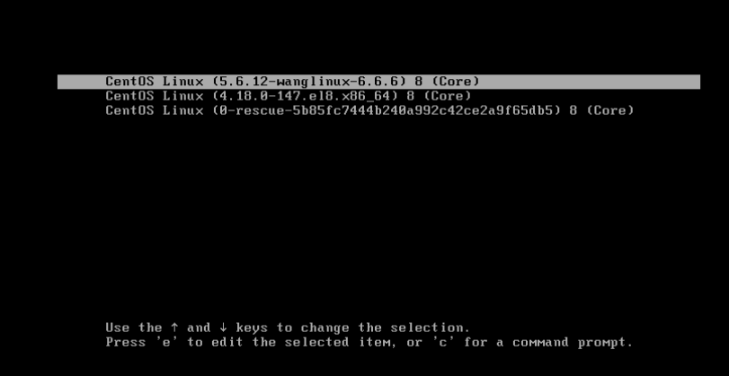
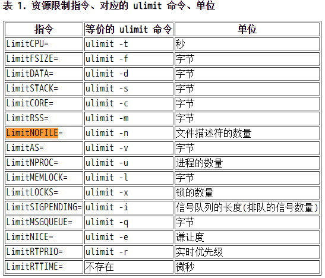
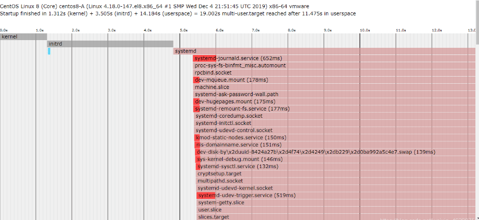
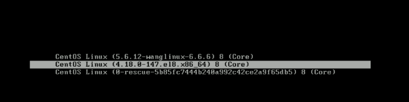

Linux启动和内核管理
- TAGS: Linux
摘要：本文介绍Linux启动和内核管理
Linux启动和内核管理
内容概述
- CentOS 6 之前版本的启动流程
- 服务管理
- Grub管理
- 自制Linux
- 启动排错
- 编译安装内核
- BusyBox
- CentOS 7 以后版本启动流程
- Unit介绍
- 服务管理和查看
- 启动排错
- 破解口令
- 修复Grub2
CentOS 6 的启动管理
Linux 组成
- kernel 实现进程管理、内存管理、网络管理、驱动程序、文件系统、安全功能 等功能
rootfs 包括程序和 glibc 库
程序：二进制执行文件
库：函数集合, function, 调用接口（头文件负责描述）
内核设计流派
- 宏内核(monolithic kernel)：又称单内核和强内核，Unix，Linux把所有系统 服务都放到内核里，所有功能集成于同一个程序，分层实现不同功能，系统庞 大复杂，Linux其实在单内核内核实现了模块化，也就相当于吸收了微内核的 优点
微内核(micro kernel)：Windows，Solaris，HarmonyOS
简化内核功能，在内核之外的用户态尽可能多地实现系统服务，同时加入相互 之间的安全保护，每种功能使用一个单独子系统实现，将内核功能移到用户空 间，性能差
CentOS 6启动流程
CentOS 6 启动流程

POST –> Boot Sequence(BIOS) –> Boot Loader (MBR) –> Kernel(ramdisk) –> rootfs –> switchroot –> /sbin/init –>(/etc/inittab, /etc/init/*.conf) –> 设定运行级别 –> 系统初始化脚本 –> 关闭或启动对应级别下的服务 –> 启动终端
- 加载BIOS的硬件信息，获取第一个启动设备
- 读取第一个启动设备MBR的引导加载程序(grub)的启动信息
- 加载核心操作系统的核心信息，核心开始解压缩，并尝试驱动所有的硬件设备
- 核心执行init程序，并获取默认的运行信息
- init程序执行/etc/rc.d/rc.sysinit文件，重新挂载根文件系统
- 启动核心的外挂模块
- init执行运行的各个批处理文件(scripts)
- init执行/etc/rc.d/rc.local
- 执行/bin/login程序，等待用户登录
- 登录之后开始以Shell控制主机
硬件启动POST
- POST：Power-On-Self-Test，加电自检，是BIOS功能的一个主要部分。负责完 成对CPU、主板、内存、硬盘子系统、显示子系统、串并行接口、键盘等硬件 情况的检测
- 主板的ROM：BIOS，Basic Input and Output System，保存着有关计算机系统 最重要的基本输入输出程序，系统信息设置、开机加电自检程序和系统启动自 举程序等
- 主板的RAM：CMOS互补金属氧化物半导体，保存各项参数的设定，按次序查找 引导设备，第一个有引导程序的设备为本次启动设备
启动加载器 bootloader
连接硬件和软件的过度阶段，启动引导操作系统
- grub 功能和组成
bootloader: 引导加载器，引导程序
- windows: ntloader，仅是启动OS
- Linux：功能丰富，提供菜单，允许用户选择要启动系统或不同的内核版本； 把用户选定的内核装载到内存中的特定空间中，解压、展开，并把系统控制权 移交给内核
- 虚拟机bios设定：开机F2(虚拟机
Linux的bootloader
- LILO：LInux LOader，早期的bootloader，功能单一
- GRUB: GRand Unified Bootloader, CentOS 6 GRUB 0.97: GRUB Legacy， CentOS 7 以后使用GRUB 2.02
GRUB 启动阶段
primary boot loader :
1st stage：MBR的前446个字节
1.5 stage： mbr之后的扇区，让stage1中的bootloader能识别stage2所在的 分区上的文件系统
- secondary boot loader ：2nd stage，分区文件/boot/grub/
- CentOS 6 grub 安装
安装grub：
(1) grub-install 安装
grub stage1和stage1_5到/dev/DISK磁盘上，并复制GRUB相关文件到 DIR/boot目录下
grub-install --root-directory=DIR /dev/DISK
(2) grub
grub> root (hd#,#) hd表示硬盘，#号表示第几个盘第几个分区 grub> setup (hd#)
上面grub stage1和stage1_5阶段都能修复
范例：修复grub的第1阶段故障
[root@centos6 grub]#hexdump -C -n 512 /dev/sda 00000000 eb 48 90 10 8e d0 bc 00 b0 b8 00 00 8e d8 8e c0 |.H..............| 00000010 fb be 00 7c bf 00 06 b9 00 02 f3 a4 ea 21 06 00 |...|.........!..| 00000020 00 be be 07 38 04 75 0b 83 c6 10 81 fe fe 07 75 |....8.u........u| 00000030 f3 eb 16 b4 02 b0 01 bb 00 7c b2 80 8a 74 03 02 |.........|...t..| 00000040 80 00 00 80 78 0c 05 00 00 08 fa 90 90 f6 c2 80 |....x...........| 00000050 75 02 b2 80 ea 59 7c 00 00 31 c0 8e d8 8e d0 bc |u....Y|..1......| 00000060 00 20 fb a0 40 7c 3c ff 74 02 88 c2 52 f6 c2 80 |. ..@|<.t...R...| 00000070 74 54 b4 41 bb aa 55 cd 13 5a 52 72 49 81 fb 55 |tT.A..U..ZRrI..U| 00000080 aa 75 43 a0 41 7c 84 c0 75 05 83 e1 01 74 37 66 |.uC.A|..u....t7f| 00000090 8b 4c 10 be 05 7c c6 44 ff 01 66 8b 1e 44 7c c7 |.L...|.D..f..D|.| 000000a0 04 10 00 c7 44 02 01 00 66 89 5c 08 c7 44 06 00 |....D...f.\..D..| 000000b0 70 66 31 c0 89 44 04 66 89 44 0c b4 42 cd 13 72 |pf1..D.f.D..B..r| 000000c0 05 bb 00 70 eb 7d b4 08 cd 13 73 0a f6 c2 80 0f |...p.}....s.....| 000000d0 84 f0 00 e9 8d 00 be 05 7c c6 44 ff 00 66 31 c0 |........|.D..f1.| 000000e0 88 f0 40 66 89 44 04 31 d2 88 ca c1 e2 02 88 e8 |..@f.D.1........| 000000f0 88 f4 40 89 44 08 31 c0 88 d0 c0 e8 02 66 89 04 |..@.D.1......f..| 00000100 66 a1 44 7c 66 31 d2 66 f7 34 88 54 0a 66 31 d2 |f.D|f1.f.4.T.f1.| 00000110 66 f7 74 04 88 54 0b 89 44 0c 3b 44 08 7d 3c 8a |f.t..T..D.;D.}<.| 00000120 54 0d c0 e2 06 8a 4c 0a fe c1 08 d1 8a 6c 0c 5a |T.....L......l.Z| 00000130 8a 74 0b bb 00 70 8e c3 31 db b8 01 02 cd 13 72 |.t...p..1......r| 00000140 2a 8c c3 8e 06 48 7c 60 1e b9 00 01 8e db 31 f6 |*....H|·......1.| 00000150 31 ff fc f3 a5 1f 61 ff 26 42 7c be 7f 7d e8 40 |1.....a.&B|..}.@| 00000160 00 eb 0e be 84 7d e8 38 00 eb 06 be 8e 7d e8 30 |.....}.8.....}.0| 00000170 00 be 93 7d e8 2a 00 eb fe 47 52 55 42 20 00 47 |...}.*...GRUB .G| 00000180 65 6f 6d 00 48 61 72 64 20 44 69 73 6b 00 52 65 |eom.Hard Disk.Re| 00000190 61 64 00 20 45 72 72 6f 72 00 bb 01 00 b4 0e cd |ad. Error.......| 000001a0 10 ac 3c 00 75 f4 c3 00 00 00 00 00 00 00 00 00 |..<.u...........| 000001b0 00 00 00 00 00 00 00 00 b7 47 02 00 00 00 80 20 |.........G..... | 000001c0 21 00 83 aa 28 82 00 08 00 00 00 00 20 00 00 aa |!...(....... ...| 000001d0 29 82 83 fe ff ff 00 08 20 00 00 00 35 0c 00 fe |)....... ...5...| 000001e0 ff ff 83 fe ff ff 00 08 55 0c 00 80 1a 06 00 fe |........U.......| 000001f0 ff ff 05 fe ff ff 00 88 6f 12 00 78 90 06 55 aa |........o..x..U.| 00000200 #破坏grub第1阶段 [root@centos6 grub]#dd if=/dev/zero of=/dev/sda bs=1 count=446 446+0 records in 446+0 records out 446 bytes (446 B) copied, 0.00200007 s, 223 kB/s [root@centos6 grub]#hexdump -C -n 512 /dev/sda 00000000 00 00 00 00 00 00 00 00 00 00 00 00 00 00 00 00 |................| * 000001b0 00 00 00 00 00 00 00 00 00 00 00 00 00 00 80 20 |............... | 000001c0 21 00 83 aa 28 82 00 08 00 00 00 00 20 00 00 aa |!...(....... ...| 000001d0 29 82 83 fe ff ff 00 08 20 00 00 00 35 0c 00 fe |)....... ...5...| 000001e0 ff ff 83 fe ff ff 00 08 55 0c 00 80 1a 06 00 fe |........U.......| 000001f0 ff ff 05 fe ff ff 00 88 6f 12 00 78 90 06 55 aa |........o..x..U.| 00000200 [root@centos6 grub]#hexdump -C -n 512 /dev/sda -v 00000000 00 00 00 00 00 00 00 00 00 00 00 00 00 00 00 00 |................| 00000010 00 00 00 00 00 00 00 00 00 00 00 00 00 00 00 00 |................| 00000020 00 00 00 00 00 00 00 00 00 00 00 00 00 00 00 00 |................| 00000030 00 00 00 00 00 00 00 00 00 00 00 00 00 00 00 00 |................| 00000040 00 00 00 00 00 00 00 00 00 00 00 00 00 00 00 00 |................| 00000050 00 00 00 00 00 00 00 00 00 00 00 00 00 00 00 00 |................| 00000060 00 00 00 00 00 00 00 00 00 00 00 00 00 00 00 00 |................| 00000070 00 00 00 00 00 00 00 00 00 00 00 00 00 00 00 00 |................| 00000080 00 00 00 00 00 00 00 00 00 00 00 00 00 00 00 00 |................| 00000090 00 00 00 00 00 00 00 00 00 00 00 00 00 00 00 00 |................| 000000a0 00 00 00 00 00 00 00 00 00 00 00 00 00 00 00 00 |................| 000000b0 00 00 00 00 00 00 00 00 00 00 00 00 00 00 00 00 |................| 000000c0 00 00 00 00 00 00 00 00 00 00 00 00 00 00 00 00 |................| 000000d0 00 00 00 00 00 00 00 00 00 00 00 00 00 00 00 00 |................| 000000e0 00 00 00 00 00 00 00 00 00 00 00 00 00 00 00 00 |................| 000000f0 00 00 00 00 00 00 00 00 00 00 00 00 00 00 00 00 |................| 00000100 00 00 00 00 00 00 00 00 00 00 00 00 00 00 00 00 |................| 00000110 00 00 00 00 00 00 00 00 00 00 00 00 00 00 00 00 |................| 00000120 00 00 00 00 00 00 00 00 00 00 00 00 00 00 00 00 |................| 00000130 00 00 00 00 00 00 00 00 00 00 00 00 00 00 00 00 |................| 00000140 00 00 00 00 00 00 00 00 00 00 00 00 00 00 00 00 |................| 00000150 00 00 00 00 00 00 00 00 00 00 00 00 00 00 00 00 |................| 00000160 00 00 00 00 00 00 00 00 00 00 00 00 00 00 00 00 |................| 00000170 00 00 00 00 00 00 00 00 00 00 00 00 00 00 00 00 |................| 00000180 00 00 00 00 00 00 00 00 00 00 00 00 00 00 00 00 |................| 00000190 00 00 00 00 00 00 00 00 00 00 00 00 00 00 00 00 |................| 000001a0 00 00 00 00 00 00 00 00 00 00 00 00 00 00 00 00 |................| 000001b0 00 00 00 00 00 00 00 00 00 00 00 00 00 00 80 20 |............... | 000001c0 21 00 83 aa 28 82 00 08 00 00 00 00 20 00 00 aa |!...(....... ...| 000001d0 29 82 83 fe ff ff 00 08 20 00 00 00 35 0c 00 fe |)....... ...5...| 000001e0 ff ff 83 fe ff ff 00 08 55 0c 00 80 1a 06 00 fe |........U.......| 000001f0 ff ff 05 fe ff ff 00 88 6f 12 00 78 90 06 55 aa |........o..x..U.| 00000200 [root@centos6 grub]#reboot #无法启动，出现下面提示

Figure 3: image-20210120111655668 光盘启动，进入rescue模式 #chroot /mnt/sysimage #grub-install /dev/sda #sync # 数据写入磁盘 # hexdump -C -n 512 /dev/sda # 查看MBR分区是否修复 #exit #exit
范例：修复grub的第1.5 阶段故障
# 破坏1阶段 [root@centos6 ~]#dd if=/dev/zero of=/dev/sda bs=1 count=446 # 修复所有阶段 [root@centos6 ~]#grub grub> root (hd0,0) root (hd0,0) Filesystem type is ext2fs, partition type 0x83 grub> setup (hd0) setup (hd0) Checking if "/boot/grub/stage1" exists... no Checking if "/grub/stage1" exists... yes Checking if "/grub/stage2" exists... yes Checking if "/grub/e2fs_stage1_5" exists... yes Running "embed /grub/e2fs_stage1_5 (hd0)"... 27 sectors are embedded. succeeded Running "install /grub/stage1 (hd0) (hd0)1+27 p (hd0,0)/grub/stage2 /grub/grub.conf"... succeeded Done. grub> quit quit # 破坏第1.5 阶段故障 [root@centos6 ~]#dd if=/dev/zero of=/dev/sda bs=512 count=25 seek=1 [root@centos6 ~]#reboot #无法启动，显示下面界面
Figure 4: image-20210214172820316 光盘启动，进入rescue模式 #chroot /mnt/sysimage #grub-install /dev/sda #sync #按 ctrl+alt+delete 三个键重启动
- grub legacy 管理-老版本
配置文件：/boot/grub/grub.conf <– /etc/grub.conf stage2及内核等通常放置于一个基本磁盘分区
grub legacy 功用：
提供启动菜单、并提供交互式接口
a：内核参数
e：编辑模式，用于编辑菜单
c：命令模式，交互式接口
加载用户选择的内核或操作系统
允许传递参数给内核
可隐藏启动菜单
为菜单提供了保护机制
为编辑启动菜单进行认证
为启用内核或操作系统进行认证
grub的命令行接口
help: 获取帮助列表 help KEYWORD: 详细帮助信息 find (hd#,#)/PATH/TO/SOMEFILE： root (hd#,#) #设置当前使用的根设备；根设备指第二阶段所在磁盘分区 kernel /PATH/TO/KERNEL_FILE: 设定本次启动的内核文件；额外还可添加许多内核支持使用的cmdline参数 例如：max_loop=100 selinux=0 init=/path/to/init #init=表示哪个文件当Init程序 initrd /PATH/TO/INITRAMFS_FILE: 设定为选定的内核提供额外文件的ramdisk boot: 引导启动选定的内核
cat /proc/cmdline 内核参数
内核参数文档:
/usr/share/doc/kernel-doc-2.6.32/Documentation/kernel-parameters.txt
grub legacy识别硬盘设备
(hd#,#) hd#: 磁盘编号，用数字表示；从0开始编号 #: 分区编号，用数字表示; 从0开始编号 示例： (hd0,0) 第一块硬盘，第一个分区
手动在grub命令行接口启动系统
grub> root (hd#,#) 找到grub的根 grub> kernel /vmlinuz-VERSION-RELEASE ro root=/dev/DEVICE grub> initrd /initramfs-VERSION-RELEASE.img grub> bootgrub legacy配置文件：/boot/grub/grub.conf
default=#: 设定默认启动的菜单项；菜单项(title)编号从0开始 timeout=#：指定菜单项等待选项选择的时长 splashimage=(hd#,#)/PATH/XPM_FILE：菜单背景图片文件路径 hd表示硬盘，#号表示第几个盘第几个分区 password [--md5| --encrypt] STRING: 启动菜单编辑认证 hiddenmenu：隐藏菜单(title) title TITLE：定义菜单项“标题”, 可出现多次 root (hd#,#)：查找stage2及kernel文件所在设备分区；为grub的根 kernel /PATH/TO/VMLINUZ_FILE [PARAMETERS]：启动的内核 initrd /PATH/TO/INITRAMFS_FILE: 内核匹配的ramfs文件 password [--md5|--encrypted ] STRING: 启动选定的内核或操作系统时进行认证
grub加密生成grub口令
grub-md5-crypt grub-crypt
破解root口令：
(1) 编辑grub菜单(选定要编辑的title，而后使用a 或 e 命令) (2) 在选定的kernel后附加1, s, S，single 都可以进入单用户模式 (3) 在kernel所在行，键入“b”命令
范例: 给grub 添加密码,防止破解root密码
[root@centos6 ~]#grub-crypt # 生成密码 Password: Retype password: $6$RedtvBe0D0sM8yKq$yKwmmnHSDb9wDRUuZbC3H1ZNwIlf/Mh88MXa3JzXloXyy0hXIxFwLIoMdgmY FfkWXxkP.vW3ypIla4P5zUKuT. [root@centos6 ~]#vim /boot/grub/grub.conf # grub 加密 default=0 timeout=5 password --encrypt $6$RedtvBe0D0sM8yKq$yKwmmnHSDb9wDRUuZbC3H1ZNwIlf/Mh88MXa3JzXloXyy0hXIxFwLIoMdgmY FfkWXxkP.vW3ypIla4P5zUKuT. splashimage=(hd0,0)/grub/splash.xpm.gz hiddenmenu title CentOS 6 (2.6.32-754.el6.x86_64)
范例：生成背景图片
- grub定制背景图：
gimp软件，xpm图片格式要求
- 图片必须是xpm格式
- 图片大小必须是640×480
- 图片只能有14种颜色
#准备图片 winner.png ，制作 [root@centos6 ~]#convert -resize 640x480 -colors 14 winner.png splash.xpm [root@centos6 ~]#more splash.xpm # 结果中有 640 480 41等即为正常 #生成 grub 支持的 gz格式，splash.xpm.gz [root@centos6 ~]#gzip splash.xpm [root@centos6 ~]#mv splash.xpm.gz /boot/grub
加载 kernel
kernel 自身初始化过程
- 探测可识别到的所有硬件设备
- 加载硬件驱动程序（借助于ramdisk加载驱动）
- 以只读方式挂载根文件系统
- 运行用户空间的第一个应用程序：/sbin/init
Linux内核特点：
- 支持模块化：.ko（内核对象），如：文件系统，硬件驱动，网络协议等
- 支持内核模块的动态装载和卸载
内核组成部分：
核心文件：/boot/vmlinuz-VERSION-release
ramdisk：辅助的伪根系统，加载相应的硬件驱动，ramdisk –> ramfs提高速 度
CentOS 5 /boot/initrd-VERSION-release.img
CentOS 6 以后版本/boot/initramfs-VERSION-release.img （加载根）
- 模块文件：/lib/modules/VERSION-release
范例：误删除内核文件/boot/vmlinuz-2.6.32-754.el6.x86_64无法启动，故障恢复
[root@centos6 ~]#rm -f /boot/vmlinuz-2.6.32-754.el6.x86_64 [root@centos6 ~]#reboot #进入rescue模式 #chroot /mnt/sysimage #mount /dev/sr0 /mnt/ #方法1 rpm -ivh /mnt/Packages/kernel.xxxx.rpm --root=/mnt/sysimage --force #方法2 #cp /mnt/isolinux/vmlinuz /boot/vmlinuz-2.6.32-754.el6.x86_64 #sync #exit #reboot
ramdisk文件的制作：
- mkinitrd命令
mkinitrd /boot/initramfs-$(uname -r).img $(uname -r) # 间接调用dracut命令
- dracut命令
dracut /boot/initramfs-$(uname -r).img $(uname -r)
范例：误删除/boot/initramfs-2.6.32-754.el6.x86_64.img无法启动，故障恢复
[root@centos6 ~]#rm -f /boot/initramfs-2.6.32-754.el6.x86_64.img [root@centos6 ~]#reboot #进入rescue模式 #chroot /mnt/sysimage #mkinitrd /boot/initramfs-$(uname -r).img $(uname -r) #sync #exit #exit #reboot
范例：误删除/boot目录，进行故障恢复
rm -fr /boot [root@centos6 ~]#reboot #进入rescue模式 # 先修复内核，再修复grub #chroot /mnt/sysimage #mount /dev/sr0 /mnt/ #方法1 #rpm -ivh /mnt/Packages/kernel.xxxx.rpm --root=/mnt/sysimage --force #方法2 #cp /mnt/isolinux/vmlinuz /boot/ # 修复内核 #mkinitrd /boot/initramfs.img $(uname -r) # 修复nitramfs #grub-install /dev/sda # 修复grub #vim /boot/grub/grub.conf # 添加grub.conf default=0 timeout=5 kernel (hd0,0)/vmlinuz root=/dev/sda2 initrd (hd0,0)/initramfs.img # sync # reboot
init初始化
POST –> BootSequence (BIOS) –> Bootloader(MBR) –> kernel(ramdisk) –> rootfs(只读) –> init（systemd）
init程序的类型：
- SysV: init, CentOS 5之前 配置文件：/etc/inittab
- Upstart: init,CentOS 6 配置文件：/etc/inittab, /etc/init/*.conf
- Systemd：systemd, CentOS 7 配置文件：/usr/lib/systemd/system /etc/systemd/system
- 运行级别
运行级别：为系统运行或维护等目的而设定；0-6：7个级别，一般使用3, 5做为默认级别
0：关机 1：单用户模式(root自动登录), single, 维护模式 2：多用户模式，启动网络功能，但不会启动NFS；维护模式 3：多用户模式，正常模式；文本界面 4：预留级别；可同3级别 5：多用户模式，正常模式；图形界面 6：重启
切换级别：
init #查看级别：
runlevel who -r
定义运行级别
/etc/inittab
CentOS 5 的inittab文件还定义以下内容
初始运行级别(RUN LEVEL) 系统初始化脚本 对应运行级别的脚本目录 捕获某个关键字顺序 定义UPS电源终端/恢复脚本 在虚拟控制台生成getty 在运行级别5初始化XCentOS 5 的inittab文件每一行格式：
id:runlevel:action:process id：是惟一标识该项的字符序列 runlevels： 定义了操作所使用的运行级别 action： 指定了要执行的特定操作 wait: 切换至此级别运行一次 respawn：此process终止，就重新启动之 initdefault：设定默认运行级别；process省略 sysinit：设定系统初始化方式 process：定义了要执行的进程范例：CentOS 5 的inittab文件
id:5:initdefault: si::sysinit:/etc/rc.d/rc.sysinit l0:0:wait:/etc/rc.d/rc 0 l1:1:wait:/etc/rc.d/rc 1 l2:2:wait:/etc/rc.d/rc 2 l3:3:wait:/etc/rc.d/rc 3 l4:4:wait:/etc/rc.d/rc 4 l5:5:wait:/etc/rc.d/rc 5 l6:6:wait:/etc/rc.d/rc 6 ca::ctrlaltdel:/sbin/shutdown -t3 -r now pf::powerfail:/sbin/shutdown -f -h +2 "Power Failure; System Shutting Down” pr:12345:powerokwait:/sbin/shutdown -c "Power Restored; Shutdown Cancelled” 1:2345:respawn:/sbin/mingetty tty1 2:2345:respawn:/sbin/mingetty tty2 3:2345:respawn:/sbin/mingetty tty3 4:2345:respawn:/sbin/mingetty tty4 5:2345:respawn:/sbin/mingetty tty5 6:2345:respawn:/sbin/mingetty tty6 x:5:respawn:/etc/X11/prefdm -nodaemon
CentOS 6 /etc/inittab和相关文件
CentOS 6 init程序为 upstart, 其配置文件/etc/inittab, /etc/init/*.conf， 配置文件的语法 遵循upstart配置文件语法格式，和CentOS5不同
/etc/inittab 设置系统默认的运行级别 /etc/init/control-alt-delete.conf /etc/init/tty.conf /etc/init/start-ttys.conf /etc/init/rc.conf /etc/init/prefdm.conf
- 初始化脚本 sysinit
/etc/rc.d/rc.sysinit
[root@centos6 ~]#cat /etc/init/rcS.conf # 通过这个文件调用 脚本 /etc/rc.d/rc.sysinit
系统初始化脚本功能
(1) 设置主机名 (2) 设置欢迎信息 (3) 激活udev和selinux (4) 挂载/etc/fstab文件中定义的文件系统 (5) 检测根文件系统，并以读写方式重新挂载根文件系统 (6) 设置系统时钟 (7) 激活swap设备 (8) 根据/etc/sysctl.conf文件设置内核参数 (9) 激活lvm及software raid设备 (10)加载额外设备的驱动程序 (11)清理操作
- 服务管理
[root@centos6 ~]#cat /etc/init/rc.conf # rc - System V runlevel compatibility # # This task runs the old sysv-rc runlevel scripts. It # is usually started by the telinit compatibility wrapper. # # Do not edit this file directly. If you want to change the behaviour, # please create a file rc.override and put your changes there. start on runlevel [0123456] stop on runlevel [!$RUNLEVEL] task export RUNLEVEL console output exec /etc/rc.d/rc $RUNLEVEL
service 命令：手动管理服务
service 服务 start|stop|restart service --status-all
/etc/rc.d/rc 控制服务脚本的开机自动运行
for srv in /etc/rc.d/rcN.d/K*; do $srv stop done for srv in /etc/rc.d/rcN.d/S*; do $srv start done
说明：rc N –> 意味着读取/etc/rc.d/rcN.d/
- K: K##：##运行次序；数字越小，越先运行；数字越小的服务，通常为依赖到 别的服务
- S: S##：##运行次序；数字越小，越先运行；数字越小的服务，通常为被依赖 到的服务
配置服务开机启动
- chkconfig命令
- ntsysv命令 废弃了，图形界面 只能改一种模式
chkconfig 命令管理服务
#查看服务在所有级别的启动或关闭设定情形： chkconfig [--list] [name] #添加服务 SysV的服务脚本放置于/etc/rc.d/init.d (/etc/init.d) #!/bin/bash chkconfig: LLLL nn nn #LLLL 表示初始在哪个级别下启动，-表示都不启动 description : 描述信息 chkconfig --add name #删除服务 chkconfig --del name #修改指定的运行级别 chkconfig [--level levels] name <on|off|reset> 说明：--level LLLL: 指定要设置的级别；省略时表示2345
范例：开机启动脚本
[root@centos6 ~]#vim /etc/init.d/testservice [root@centos6 ~]#cat /etc/init.d/testservice #!/bin/bash # chkconfig: - 98 3 # description : test service scripts # 这里的 - 横线初始默认全是off的 . /etc/init.d/functions start (){ touch /var/lock/subsys/testservice action "Starting testservice:" sleep 3 } stop (){ rm -f /var/lock/subsys/testservice action "Shutting down testservice:" } restart (){ stop start } status (){ if [ -e /var/lock/subsys/testservice ] ;then echo "testservice is running..." else echo "testservice is stopped" fi } case $1 in start) start ;; stop) stop ;; restart) restart ;; status) status ;; *) echo "Usage:/etc/init.d/testservice {start|stop|restart|status}" ;; esac [root@centos6 ~]#chmod +x /etc/init.d/testservice [root@centos6 ~]#chkconfig --add testservice [root@centos6 ~]#chkconfig --list testservice testservice 0:off 1:off 2:on 3:on 4:on 5:on 6:off [root@centos6 ~]#chkconfig --del testservice # 删除开机启动，实际删除软连接
- 非独立服务
服务分为独立服务和非独立服务
瞬态（Transient）服务被超级守护进程 xinetd 进程所管理，也称为非独立服务
进入的请求首先被xinetd代理
配置文件：
/etc/xinetd.conf /etc/xinetd.d/<service>
用chkconfig控制非独立服务开机启动
示例：chkconfig tftp on - 开机启动文件 rc.local
/etc/rc.d/rc.local
注意：
- 正常级别下，最后启动一个服务S99local没有链接至/etc/rc.d/init.d一个服 务脚本，而是指向了/etc/rc.d/rc.local脚本
- 不便或不需写服务脚本放置于/etc/rc.d/init.d/目录，且又想开机时自动运 行的命令，可直接放置于/etc/rc.d/rc.local文件中
- /etc/rc.d/rc.local在指定运行级别脚本后运行
CentOS 启动过程总结
/sbin/init –> (/etc/inittab) –> 设置默认运行级别 –> 运行系统初始脚本/etc/rc.d/rc.sysinit、完成系统初始化 –> (关闭对应下需要关闭的服务)启动需要启动服务 /etc/rc#.d/Sxxxx, /etc/rc.d/rc.local–> 设置登录终端
参看：

自制linux系统
1.4.1 分区并创建文件系统
#分两个必要的分区,/dev/sdb1对应/boot /dev/sdb2对应根 / [root@centos6 ~]#echo -e 'n\np\n1\n\n+1G\nw\n' | fdisk /dev/sdb [root@centos6 ~]#echo -e 'n\np\n2\n\n\n\nw\n' | fdisk /dev/sdb [root@centos6 ~]#mkfs.ext4 /dev/sdb1 [root@centos6 ~]#mkfs.ext4 /dev/sdb2
1.4.2 挂载boot
#子目录必须为boot [root@centos6 ~]#mkdir /mnt/boot [root@centos6 ~]#mount /dev/sdb1 /mnt/boot
1.4.3 安装grub
[root@centos6 ~]#grub-install --root-directory=/mnt/ /dev/sdb
1.4.4 准备内核和initramfs文件
[root@centos6 ~]#cp /boot/vmlinuz-2.6.32-754.el6.x86_64 /mnt/boot/vmlinuz [root@centos6 ~]#cp /boot/initramfs-2.6.32-754.el6.x86_64.img /mnt/boot/initramfs.img
1.4.5 建立grub.conf
[root@centos6 ~]#cat /mnt/boot/grub/grub.conf default=0 timeout=5 title cui linux root (hd0,0) kernel /vmlinuz root=/dev/sda2 selinux=0 init=/bin/bash initrd /initramfs.img # root=/dev/sda2 对于要启动的系统而言 [root@centos6 ~]#tree /mnt/boot /mnt/boot ├── grub │ ├── device.map │ ├── e2fs_stage1_5 │ ├── fat_stage1_5 │ ├── ffs_stage1_5 │ ├── grub.conf │ ├── iso9660_stage1_5 │ ├── jfs_stage1_5 │ ├── minix_stage1_5 │ ├── reiserfs_stage1_5 │ ├── stage1 │ ├── stage2 │ ├── ufs2_stage1_5 │ ├── vstafs_stage1_5 │ └── xfs_stage1_5 ├── initramfs-2.6.32-754.el6.x86_64.img ├── lost+found └── vmlinuz.img 2 directories, 16 files
1.4.6 准备根下面相关程序和库
[root@centos6 ~]#mkdir /mnt/sysroot
[root@centos6 ~]#mount /dev/sdb2 /mnt/sysroot
[root@centos6 ~]#mkdir –pv /mnt/sysroot/{boot,dev,sys,proc,etc,lib,lib64,bin,sbin,tmp,var,usr,opt,home,root,mnt,media}
#复制bash等命令和相关库文件，如：
bash,ifconfig,insmod,ping,mount,ls,cat,df,lsblk,blkid,tree,fdisk
[root@centos6 ~]#mkdir /mnt/sysroot/{dev,proc,etc,sys,lib,home,root}
for i in $(ldd /bin/bash | grep -o '/[^[:space:]]\+[0-9]\>'); do cp $i /mnt/sysroot/lib64 ;done
#准备网卡驱动
[root@centos6 ~]#ethtool -i eth0
driver: e1000
version: 7.3.21-k8-NAPI
firmware-version:
bus-info: 0000:02:01.0
supports-statistics: yes
supports-test: yes
supports-eeprom-access: yes
supports-register-dump: yes
supports-priv-flags: no
[root@centos6 ~]#modinfo e1000
filename:/lib/modules/2.6.32-754.el6.x86_64/kernel/drivers/net/e1000/e1000.ko
[root@centos6 ~]#cp /lib/modules/2.6.32-754.el6.x86_64/kernel/drivers/net/e1000/e1000.ko /mnt/sysroot/lib/
[root@centos6 ~]#chroot /mnt/sysroot/
bash-4.1# pwd
/
1.4.7 准备新的虚拟机
将前一虚拟机sdb硬盘对应的vmdk文件增加进去，删除原有磁盘，开机启动




启动过程的故障排错
1.5.1 实战案例 故障: 删除 /sbin/init 无法启动 恢复过程
1 先进入grub菜单，在kernel参数后加 selinux=0 init=/bin/bash 2 mount -o remount,rw / 3 mount /dev/sr0 /mnt/ 4 rpm2cpio /mnt/Packages/upstart.xxx.rpm | cpio -idv ./sbin/init 5 mv ./sbin/init /sbin/
1.5.2 实战案例
故障：rm -rf /boot/* 和 /etc/fstab 进行恢复
恢复过程
- 用光盘进入 rescue mode，找到/ 所在分区并恢复/etc/fstab

fdisk -l mkdir /mnt/rootdir mount /dev/sdaN /mnt/rootdir # 检查是不是根目录 ls /mnt/rootdir mount /dev/sda2 /mnt/rootdir vim /mnt/rootdir/etc/fstab /dev/sda1 /boot ext4 defaults 0 0 /dev/sda2 / ext4 defaults 0 0 /dev/sda3 /data ext4 defaults 0 0 /dev/sda5 swap swap defaults 0 0 reboot
rescue mode 恢复内核和initrd 文件
/dev/sda2 –> /mnt/sysimage
chroot /mnt/sysimage mount /dev/sr0 /mnt/ #方法1 rpm -ivh /mnt/Packages/kernel.xxxx.rpm --root=/mnt/sysimage --force #方法2 cp /mnt/isolinux/vmlinuz /boot/ mkinitrd /boot/initramfs.img `uname -r`
- 修复 grub
grub-install /dev/sda vim /boot/grub/grub.conf 方法2 [root@centos6 ~]#cat /boot/grub/grub.conf default=0 timeout=5 title centos kernel /vmlinuz root=/dev/sda2 initrd /initramfs.img
- reboot
/proc 目录和内核参数管理
/proc目录：内核把自己内部状态信息及统计信息，以及可配置参数通过proc伪 文件系统加以输出
帮助：man proc
内核参数：
- 只读：只用于输出信息
- 可写：可接受用户指定“新值”来实现对内核某功能或特性的配置
/proc/sys 设置
- sysctl命令用于查看或设定此目录中诸多参数
sysctl -w path.to.parameter=VALUE
- 默认配置文件：/etc/sysctl.conf 及以下文件(参数设置放在任何一个都可以)
/run/sysctl.d/*.conf /etc/sysctl.d/*.conf /usr/local/lib/sysctl.d/*.conf /usr/lib/sysctl.d/*.conf /lib/sysctl.d/*.conf /etc/sysctl.conf
范例:
sysctl -w kernel.hostname=mail.me.com
- echo命令通过重定向方式也可以修改大多数参数的值
echo "VALUE" > /proc/sys/path/to/parameter
范例：
echo “websrv” > /proc/sys/kernel/hostname
sysctl命令：
(1) 临时设置某参数
sysctl -w parameter=VALUE
(2) 通过读取配置文件设置参数
sysctl -p [/path/to/conf_file]
(3) 查看所有生效参数
sysctl -a
常用的内核参数：
net.ipv4.ip_forward #路由功能,表示开启ip转发 net.ipv4.icmp_echo_ignore_all #允许ping设置 net.ipv4.ip_nonlocal_bind #允许应用程序可以监听本地不存在的IP ，vip时会用到 vm.drop_caches #释放缓冲区 fs.file-max = 1020000 #最大文件个数
范例
[root@centos8 ~]#cat /proc/sys/net/ipv4/icmp_echo_ignore_all 0 [root@centos8 ~]#vim /etc/sysctl.d/test.conf [root@centos8 ~]#cat /etc/sysctl.d/test.conf net.ipv4.icmp_echo_ignore_all=1 [root@centos8 ~]#sysctl -p /etc/sysctl.d/test.conf net.ipv4.icmp_echo_ignore_all = 1 [root@centos8 ~]#cat /proc/sys/net/ipv4/icmp_echo_ignore_all 1
/sys 目录
/sys目录：
使用sysfs文件系统，为用户使用的伪文件系统， 输出内核识别出的各硬件设 备的相关属性信息 ，也有内核对硬件特性的设定信息；有些参数是可以修改的， 用于调整硬件工作特性
udev通过此路径下输出的信息动态为各设备创建所需要设备文件，udev是运行用 户空间程序
专用工具：udevadmin, hotplug
udev为设备创建设备文件时，会读取其事先定义好的规则文件，一般在 /etc/udev/rules.d 及/usr/lib/udev/rules.d目录下
内核模块管理和编译
单内核体系设计、但充分借鉴了微内核设计体系的优点，为内核引入模块化机制
内核组成部分：
- kernel：内核核心，一般为bzImage，通常在/boot目录下 , 名称为 vmlinuz-VERSION-RELEASE
- kernel object：内核对象，一般放置于
/lib/modules/VERSION-RELEASE/ - 辅助文件：ramdisk
- initrd：从CentOS 5 版本以前
- initramfs：从CentOS6 版本以后
内核版本
运行中的内核：
uname命令：
uname - print system information
uname [OPTION]…
-n: 显示节点名称 -r: 显示VERSION-RELEASE -a:显示所有信息
内核模块命令
lsmod命令：
- 显示由核心已经装载的内核模块
- 显示的内容来自于: /proc/modules文件
范例：
[root@centos8 ~]#lsmod Module Size Used by uas 28672 0 usb_storage 73728 1 uas nls_utf8 16384 0 isofs 45056 0 #显示：名称、大小，使用次数，被哪些模块依赖
modinfo命令：
功能：管理内核模块
配置文件：/etc/modprobe.conf, /etc/modprobe.d/*.conf
- 显示模块的详细描述信息
modinfo [ -k kernel ] [ modulename|filename... ]
常用选项：
-n：只显示模块文件路径；相对于-F filename -p：显示模块参数 -a：作者 -d：描述 -F field：仅显示指定字段的信息； -k kernel：多内核并存时若要查询另外一个kernel上的模块信息
范例：
[root@centos8-A ~]#lsmod |grep xfs
xfs 1474560 2
libcrc32c 16384 3 nf_conntrack,nf_nat,xfs
[root@centos8-A ~]#modinfo xfs
filename: /lib/modules/4.18.0-147.el8.x86_64/kernel/fs/xfs/xfs.ko.xz
license: GPL
description: SGI XFS with ACLs, security attributes, no debug enabled
author: Silicon Graphics, Inc.
alias: fs-xfs
rhelversion: 8.1
srcversion: 947E2EDC226CFCEC0F1F71B
depends: libcrc32c
intree: Y
name: xfs
vermagic: 4.18.0-147.el8.x86_64 SMP mod_unload modversions
sig_id: PKCS#7
signer: CentOS Linux kernel signing key
sig_key: 79:05:D0:5C:21:6F:8A:C5:DD:6E:19:BB:77:9D:05:F6:F2:21:B8:17
sig_hashalgo: sha256
signature: C9:68:71:F6:2D:2A:F9:83:AC:A8:12:30:29:E3:61:1C:0C:2F:1E:7E:
BC:1D:87:B9:56:00:4E:6F:87:9C:6F:22:78:09:D1:D9:C0:D0:21:C1:
8F:0F:62:11:C0:15:E5:6E:70:D4:A5:92:F7:15:D8:0F:C4:4E:F4:7E:
87:74:A9:32:CC:D7:97:1B:11:B9:3C:98:51:25:DD:99:1D:15:55:19:
C2:E4:67:58:AE:A0:7F:21:13:3C:F5:A1:8B:86:81:70:49:3F:62:3B:
F0:37:A9:8F:87:01:5D:7F:FA:5C:5A:1F:16:88:EE:87:DA:03:8C:9D:
92:7E:5E:F4:D6:56:AF:FF:DB:FA:8A:AC:D3:BE:2F:13:7A:1D:CB:BF:
A5:EB:2C:06:2C:7D:55:E6:AA:78:83:51:F4:CA:72:98:79:C1:55:E4:
80:C2:8D:4F:E5:CB:EC:A4:9D:AB:5A:AA:CB:8A:A5:FE:0C:E1:CC:1E:
26:A3:D1:E7:FA:F4:D2:66:12:1F:BB:4F:73:16:8A:A0:19:7E:A5:17:
3D:DF:2A:A5:B2:4F:64:44:2B:3E:06:A1:3A:5F:FF:DD:CC:6B:71:20:
A8:6E:83:AF:A6:C0:38:B6:3A:C3:72:2F:74:64:1F:E4:1C:EC:E5:B4:
77:AA:5D:38:3B:50:EB:1A:82:79:13:7C:A6:70:B1:37:A0:1E:4C:18:
C9:14:46:7A:0B:D4:2F:A3:29:E6:49:42:D4:A8:03:4F:33:FA:D7:3E:
C4:CE:F7:53:C7:1D:7F:28:4F:70:F5:67:71:29:2E:9C:E5:A6:60:02:
D2:49:7F:F1:6D:3D:E6:F9:FF:B0:01:F8:C2:50:C3:AB:23:50:F4:19:
A2:45:DC:9B:C3:1C:DA:C0:36:88:7C:C0:9B:D7:7D:B6:3A:D5:83:AD:
AD:7A:33:92:09:D2:7F:B0:0E:B4:21:2F:DB:F9:F7:50:E4:C8:94:D1:
29:E6:2D:C1:5D:51:94:14:1C:72:04:CB:BF:FC:DA:6E:A3:66:D2:0A:
C5:E0:F2:0F
装载或卸载内核模块
modprobe [ -C config-file ] [ modulename ] [ module parame-ters... ] modprobe [ -r ] modulename… 卸载 同时会挂载依赖的模块
范例：
[root@centos8-A ~]#lsmod |grep usb btusb 53248 0 btrtl 16384 1 btusb btbcm 16384 1 btusb btintel 24576 1 btusb bluetooth 630784 27 btrtl,btintel,btbcm,bnep,btusb,rfcomm [root@centos8-A ~]#modprobe usb_storage [root@centos8-A ~]#lsmod |grep usb usb_storage 73728 0 btusb 53248 0 btrtl 16384 1 btusb btbcm 16384 1 btusb btintel 24576 1 btusb bluetooth 630784 27 btrtl,btintel,btbcm,bnep,btusb,rfcomm [root@centos8-A ~]#modprobe -r usb_storage [root@centos8-A ~]#lsmod |grep uas #因为uas依赖usb_storage,安装uas会自动加载usb_storage [root@centos8-A ~]#modprobe uas [root@centos8-A ~]#lsmod |grep usb usb_storage 73728 1 uas btusb 53248 0 btrtl 16384 1 btusb btbcm 16384 1 btusb btintel 24576 1 btusb bluetooth 630784 27 btrtl,btintel,btbcm,bnep,btusb,rfcomm [root@centos8-A ~]#lsmod |grep -E 'usb|uas' uas 28672 0 usb_storage 73728 1 uas btusb 53248 0 btrtl 16384 1 btusb btbcm 16384 1 btusb btintel 24576 1 btusb bluetooth 630784 27 btrtl,btintel,btbcm,bnep,btusb,rfcomm #因为uas依赖usb_storage，无法直接卸载usb_storage [root@centos8-A ~]#modprobe -r usb_storage modprobe: FATAL: Module usb_storage is in use. [root@centos8-A ~]#modprobe -r uas [root@centos8-A ~]#modprobe -r usb_storage
depmod命令：内核模块依赖关系文件及系统信息映射文件的生成工具
insmod命令：可以安装模块，需要指定模块文件路径，并且不自动解决依赖模块
insmod [ filename ] [ module options... ]
范例：
insmod `modinfo –n exportfs` insmod `modinfo –n xfs`
rmmod命令：卸载模块
rmmod [ modulename ]
范例：
rmmod xfs rmmod exportfs
编译内核
编译安装内核准备：
- 准备好开发环境
- 获取目标主机上硬件设备的相关信息
- 获取目标主机系统功能的相关信息，例如:需要启用相应的文件系统
- 获取内核源代码包， www.kernel.org
编译准备
目标主机硬件设备相关信息
CPU：
cat /proc/cpuinfo x86info -a lscpu
PCI设备：lspci -v ，-vv
[root@centos7 ~]# lspci #查看当前PCI设备 00:00.0 Host bridge: Intel Corporation 440BX/ZX/DX - 82443BX/ZX/DX Host bridge (rev 01) 00:01.0 PCI bridge（北桥）: Intel Corporation 440BX/ZX/DX - 82443BX/ZX/DX AGP bridge (rev 01) 00:07.0 ISA bridge（南桥）: Intel Corporation 82371AB/EB/MB PIIX4 ISA (rev 08) 00:07.1 IDE interface(IDE接口): Intel Corporation 82371AB/EB/MB PIIX4 IDE (rev 01) 00:07.3 Bridge(高级电源管理桥): Intel Corporation 82371AB/EB/MB PIIX4 ACPI (rev 08) 00:07.7 System peripheral（集成接口）: VMware Virtual Machine Communication Interface (rev 10) 00:0f.0 VGA compatible controller（显卡接口）: VMware SVGA II Adapter 00:10.0 SCSI storage controller（存储控制器）: LSI Logic / Symbios Logic 53c1030 PCI-X Fusion-MPT Dual Ultra320 SCSI (rev 01) ... ... 00:18.7 PCI bridge: VMware PCI Express Root Port (rev 01) 02:00.0 USB controller: VMware USB1.1 UHCI Controller（型号UHCI，USB1.1控制器） 02:01.0 Ethernet controller: Intel Corporation 82545EM Gigabit Ethernet Controller (Copper) (rev 01)（千兆以太网网控制器） 02:02.0 Multimedia audio controller: Ensoniq ES1371 / Creative Labs CT2518 [AudioPCI-97] (rev 02) 02:03.0 USB controller: VMware USB2 EHCI Controller（型号EHCI，USB2控制器）
USB设备：lsusb -v，-vv
[root@centos8-A ~]#dnf install usbutils -y [root@centos8-A ~]#lsusb Bus 001 Device 004: ID 0951:1666 Kingston Technology DataTraveler 100 G3/G4/SE9 G2 Bus 001 Device 001: ID 1d6b:0002 Linux Foundation 2.0 root hub Bus 002 Device 003: ID 0e0f:0002 VMware, Inc. Virtual USB Hub Bus 002 Device 002: ID 0e0f:0003 VMware, Inc. Virtual Mouse Bus 002 Device 001: ID 1d6b:0001 Linux Foundation 1.1 root hub [root@centos8-A ~]#lsmod |grep usb usb_storage 73728 1 uas
lsblk 块设备
全部硬件设备信息：hal-device：CentOS 6
开发环境相关包
gcc make ncurses-devel flex bison openssl-devel elfutils-libelf-devel
内核编译安装实现
- 下载源码文件
- 准备文本配置文件/boot/config-`uname -r`
- make menuconfig：配置内核选项 ，相当于./configure
[ ]: N [M]: M # 独立模块核心文件 [*]: Y # 打包到内核文件中
make [-j #] 或者用以下两步实现：
make -j # bzImage
make -j # modules
- 安装模块：make modules_install
- 安装内核相关文件：make install
- 安装bzImage为 /boot/vmlinuz-VERSION-RELEASE
- 生成initramfs文件
- 编辑grub的配置文件
范例：编译内核
获取源代码 tar xf linux- cd /usr/src ln -sv linux-3.10.67 linux #编译驱动时通常会找linux目录，这里创建个软连接 cd linux make menuconfig #配置内核选项 make [-j #] #编译内核，可使用-j指定编译线程数据流 make modules_install #安装内核模块 make install #安装内核 重启系统，选择使用新内核；
编译安装内核实战案例
# 安装依赖 [root@centos8 ~]#yum -y install gcc make ncurses-devel flex bison openssl-devel elfutils-libelf-devel # 下载内核 [root@centos8 ~]#tar xf linux-5.6.12.tar.xz -C /usr/local/src [root@centos8 ~]#cd /usr/local/src [root@centos8 ~]#ln -sv linux-5.6.12 linux # 编译 [root@centos8 ~]#cd /usr/src/linux [root@centos8 linux]#cp /boot/config-$(uname -r) ./.config [root@centos8 linux]#vim .config #修改下面两行，CentOS7无需修改 # CONFIG_MODULE_SIG is not set CONFIG_SYSTEM_TRUSTED_KEYS="" [root@centos8 linux]#make help [root@centos8 linux]#make menuconfig #大窗口才能显示 [root@centos8 linux]#time make -j $(nproc) # nproc 获取CPU个数 #或者两步实现：make -j 2 bzImage ; make -j 2 modules ...... LD [M] sound/xen/snd_xen_front.ko LD [M] virt/lib/irqbypass.ko real 82m52.128s user 133m37.982s sys 25m46.311s [root@centos8 linux]#pwd /usr/local/src/linux [root@centos8 linux]#du -sh . 15G . [root@centos8 linux]#make modules_install [root@centos8 linux]#ls /lib/modules 4.18.0-147.el8.x86_64 5.6.12-cuilinux-6.6.6 [root@centos8 linux]#du -sh /lib/modules/5.6.12-cuilinux-6.6.6/ 3.5G /lib/modules/5.6.12-cuilinux-6.6.6/ [root@centos8 linux]#make install # 会自动修改grub信息 [root@centos8 linux]#ls /boot System.map-4.18.0-147.el8.x86_64 System.map-5.6.12-cuilinux-6.6.6 vmlinuz-5.6.12-cuilinux-6.6.6 [root@centos8 ~]#ls /boot/loader/entries/ 5b85fc7444b240a992c42ce2a9f65db5-0-rescue.conf 5b85fc7444b240a992c42ce2a9f65db5-5.6.12-cuilinux-6.6.6.conf [root@centos8 ~]#cat /boot/loader/entries/5b85fc7444b240a992c42ce2a9f65db5-5.6.12-cuilinux-6.6.6.conf title CentOS Linux (5.6.12-cuilinux-6.6.6) 8 (Core) version 5.6.12-cuilinux-6.6.6 linux /vmlinuz-5.6.12-cuilinux-6.6.6 initrd /initramfs-5.6.12-cuilinux-6.6.6.img $tuned_initrd options $kernelopts $tuned_params id centos-20200513060531-5.6.12-cuilinux-6.6.6 grub_users $grub_users grub_arg --unrestricted grub_class kernel [root@centos8 ~]#reboot [root@centos8 ~]#uname -r 5.6.12-cuilinux-6.6.6

centos7编译报错
cc1: error: -Werror=date-time: no option -Wdate-time # 4.9以及之后的gcc版本中才有这两个选项，如果你在gcc版本小于4.9的系统上编译，比如在centos7.2系统中，centos中默认的gcc版本是4.8.5，编译时就会报"cc1: 错误：-Werror=date-time：没有选项 -Wdate-time"错误，所以这种解决方法如果只是使用4.9以上的gcc版本是没有问题的；
# 方法1 升级gcc 4.9 yum install bzip2 -y wget -P /usr/src https://mirrors.aliyun.com/gnu/gcc/gcc-10.2.0/gcc-10.2.0.tar.gz cd /usr/src && tar -xzvf gcc-10.2.0.tar.gz cd gcc-10.2.0/ && ./contrib/download_prerequisites # 配置依赖项 #这一步可能国内会等待比较久，耐心等待 #如果报错其他文件不能下载，去https://gcc.gnu.org/pub/gcc/infrastructure/下载对应文件，复制到/usr/src/gcc-10.2.0即可 #创建安装文件夹和编译文件夹 mkdir /usr/lib/gcc/x86_64-redhat-linux/10.2.0 mkdir /usr/src/gcc-build-10.2.0 # 配置安装文件 cd /usr/src/gcc-10.2.0 ./configure --prefix=/usr/lib/gcc/x86_64-redhat-linux/10.2.0/ --enable-checking=release --enable-languages=c,c++ --disable-multilib # 执行编译并安装(编译需要2-3小时，请耐心等待) time make -j $(nproc) && make install # 备份原gcc并链接新gcc mv /usr/bin/gcc /usr/bin/gcc-4.8.5 mv /usr/bin/g++ /usr/bin/g++-4.8.5 alternatives --install /usr/bin/gcc gcc /usr/bin/gcc-4.8.5 88 --slave /usr/bin/g++ g++ /usr/bin/g++-4.8.5 alternatives --install /usr/bin/gcc gcc /usr/lib/gcc/x86_64-redhat-linux/10.2.0/bin/x86_64-pc-linux-gnu-gcc 99 --slave /usr/bin/g++ g++ /usr/lib/gcc/x86_64-redhat-linux/10.2.0/bin/x86_64-pc-linux-gnu-g++ alternatives --config gcc # 查询版本 gcc -v g++ -v # 如果出现错误 /lib64/libstdc++.so.6: version `GLIBCXX_3.4.21' not found /lib64/libstdc++.so.6: version `GLIBCXX_3.4.22' not found #执行链接新的libstdc++.so.6库文件 rm -f /usr/lib64/libstdc++.so.6 ln -s /usr/lib/gcc/x86_64-redhat-linux/10.2.0/lib64/libstdc++.so.6 /usr/lib64/libstdc++.so.6 #可以用以下指令查看目前包含哪些库 strings /usr/lib64/libstdc++.so.6 | grep GLIBC
内核编译说明
1.配置内核选项
支持“更新”模式进行配置：make help
a) make config：基于命令行以遍历的方式配置内核中可配置的每个选项 b) make menuconfig：基于curses的文本窗口界面 c) make gconfig：基于GTK \(GNOME）环境窗口界面 d) make xconfig：基于QT\(KDE\)环境的窗口界面
支持“全新配置”模式进行配置 a) make defconfig：基于内核为目标平台提供的“默认”配置进行配置 b) make allyesconfig: 所有选项均回答为“yes“ c) make allnoconfig: 所有选项均回答为“no“
2.编译内核
- 全编译:
make [-j #]
- 编译内核的一部分功能：
(a) 只编译某子目录中的相关代码
cd /usr/src/linux; make dir/
(b) 只编译一个特定的模块
cd /usr/src/linux; make dir/file.ko
范例：只为e1000编译驱动：
make drivers/net/ethernet/intel/e1000/e1000.ko
3 交叉编译内核
编译的目标平台与当前平台不相同 make ARCH=arch_name
要获取特定目标平台的使用帮助 make ARCH=arch_name help
示例：
make ARCH=arm help
4 重新编译需要事先清理操作
make clean：清理大多数编译生成的文件，但会保留.config文件等 make mrproper: 清理所有编译生成的文件、config及某些备份文件 make distclean：包含 make mrproper,并清理patches以及编辑器备份文件
卸载内核
- 删除/usr/src/linux/目录下不需要的内核源码
- 删除/lib/modules/目录下不需要的内核库文件
- 删除/boot目录下启动的内核和内核映像文件
- 更改grub的配置文件，删除不需要的内核启动列表 grub2-mkconfig -o /boot/grub2/grub.cfg
- CentOS 8 还需要删除 /boot/loader/entries/5b85fc7444b240a992c42ce2a9f65db5-新内核版 本.conf
Busybox
Busybox介绍

Busybox 最初是由 Bruce Perens 在 1996 年为 Debian GNU/Linux安装盘编写
的。其目标是在一张软盘(存储空间只有1MB多)上创建一个GNU/Linux系统，可以
用作安装盘和急救盘
Busybox 是一个开源项目，遵循GPL v2协议。Busybox将众多的UNIX命令集合进 一个很小的可执行程序中，可以用来替代GNU fileutils、shellutils等工具集。 Busybox中各种命令与相应的GNU工具相比，所能提供的选项比较少，但是也足够 一般的应用了。Busybox主要用于嵌入式系统
Busybox 是一个集成了三百多个最常用Linux命令和工具的软件。BusyBox包含了 一些简单的工具，例如ls、cat和echo等等，还包含了一些更大、更复杂的工具， 例grep、find、mount以及telnet。有些人将BusyBox 称为 Linux工具里的瑞士 军刀。简单的说BusyBox就好像是个大工具箱，它集成压缩了Linux的许多工具和 命令，也包含了 Android 系统的自带的shell
定制小型的Linux操作系统：linux内核+busybox
官方网站：https://busybox.net/
Busybox使用
busybox 的编译过程与Linux内核的编译类似
busybox的使用有三种方式：
- busybox后直接跟命令，如 busybox ls
- 直接将busybox重命名，如 cp busybox tar
- 创建符号链接，如 ln -s busybox rm
busybox的安装
以上方法中，第三种方法最方便，但为busybox中每个命令都创建一个软链接， 相当费事，busybox提供自动方法：busybox编译成功后，执行make install,则 会产生一个_install目录，其中包含了busybox及每个命令的软链接
编译Busybox
busybox编译安装
[root@centos7 ~]#yum -y install gcc gcc-c++ glibc glibc-devel make pcre pcredevel openssl openssl-devel systemd-devel zlib-devel glibc-static ncurses-devel [root@centos7 ~]#wget https://busybox.net/downloads/busybox-1.31.1.tar.bz2 [root@centos7 ~]#tar xvf busybox-1.31.1.tar.bz2 [root@centos7 ~]#cd busybox-1.31.1/ [root@centos7 busybox-1.31.1]#make menuconfig #按下面选择，把busybox编译也静态二进制、不用共享库:Settings -->Build Options -->[*] Build static binary (no shared libs) [root@centos7 busybox-1.31.1]#make #如果出错，执行make clean后，重新执行上面命令 [root@centos7 busybox-1.31.1]#ls [root@centos7 busybox-1.31.1]#make install [root@centos7 busybox-1.31.1]#pwd /root/busybox-1.31.1 [root@Centos7 busybox-1.31.1]#ls applets debianutils loginutils qemu_multiarch_testing applets_sh docs mailutils README arch e2fsprogs Makefile runit archival editors Makefile.custom scripts AUTHORS examples Makefile.flags selinux busybox findutils Makefile.help shell busybox.links include make_single_applets.sh size_single_applets.sh busybox_unstripped init miscutils sysklogd busybox_unstripped.map _install modutils testsuite busybox_unstripped.out INSTALL networking TODO Config.in klibc-utils NOFORK_NOEXEC.lst TODO_unicode configs libbb NOFORK_NOEXEC.sh util-linux console-tools libpwdgrp printutils coreutils LICENSE procps [root@Centos7 busybox-1.31.1]#ll busybox -h -rwxr-xr-x 1 root root 2.6M May 14 09:35 busybox [root@Centos7 busybox-1.31.1]#ls _install/ bin linuxrc sbin usr [root@Centos7 busybox-1.31.1]#ls _install/bin arch cttyhack fdflush kbd_mode mknod ping run-parts tar ash date fgrep kill mktemp ping6 scriptreplay touch base64 dd fsync link more pipe_progress sed true busybox df getopt linux32 mount printenv setarch umount cat dmesg grep linux64 mountpoint ps setpriv uname chattr dnsdomainname gunzip ln mpstat pwd setserial usleep chgrp dumpkmap gzip login mt reformime sh vi chmod echo hostname ls mv resume sleep watch chown ed hush lsattr netstat rev stat zcat conspy egrep ionice lzop nice rm stty cp false iostat makemime nuke rmdir su cpio fatattr ipcalc mkdir pidof rpm sync [root@Centos7 busybox-1.31.1]#find _install/ -type l |wc -l 396 [root@Centos7 busybox-1.31.1]#du -sh _install/ 2.6M _install/ [root@Centos7 busybox-1.31.1]#mkdir /mnt/sysroot/ [root@Centos7 busybox-1.31.1]#cp -a _install/* /mnt/sysroot/

systemd
init的发展
- CentOS 5: SysV init,串行
- CentOS 6：Upstart,并行，借鉴ubantu
- CentOS 7：Systemd,并行，借鉴MAC
systemd 特性
Systemd：从 CentOS 7 版本之后开始用 systemd实现init进程，系统启动和服 务器守护进程管理器，负责在系统启动或运行时，激活系统资源，服务器进程和 其它进程
Systemd新特性
- 系统引导时实现服务并行启动
- 按需启动守护进程
- 自动化的服务依赖关系管理
- 同时采用socket式与D-Bus总线式激活服务
- socket与服务程序分离
- 向后兼容sysv init脚本
- 使用systemctl命令管理，systemctl命令固定不变，不可扩展，非由systemd 启动的服务，systemctl无法与之通信和控制
- 系统状态快照
systemd核心概念：unit
unit表示不同类型的systemd对象，通过配置文件进行标识和配置；文件中主要 包含了系统服务、监听socket、保存的系统快照以及其它与init相关的信息
Unit类型：
# 查看unit支持的资源类型 [root@centos8-A ~]#systemctl -t help Available unit types: service socket target device mount automount swap timer path slice scope
- service unit: 文件扩展名为.service,用于定义系统服务，相当于开启服务 脚本
- Socket unit: .socket,定义进程间通信用的socket文件，也可在系统启动时， 延迟启动服务，实现按需启动，代替了xinetd
- Target unit: 文件扩展名为.target，用于模拟实现运行级别，相当于runlevel
- Device unit: .device, 用于定义内核识别的设备
- Mount unit: .mount, 定义文件系统挂载点
- Snapshot unit: .snapshot, 管理系统快照
- Swap unit: .swap, 用于标识swap设备
- Automount unit: .automount，文件系统的自动挂载点
- Path unit: .path，用于定义文件系统中的一个文件或目录使用,常用于当文 件系统变化时，延迟激活服务，如：spool目录
范例：socket与服务程序分离
# socket ip 端口 [root@ali-bj-prod-web001 ~]# yum install telnet-server [root@ali-bj-prod-web001 ~]# systemctl start telnet.socket [root@ali-bj-prod-web001 ~]# systemctl status telnet.socket ● telnet.socket - Telnet Server Activation Socket Loaded: loaded (/usr/lib/systemd/system/telnet.socket; disabled; vendor preset: disabled) Active: active (listening) since Sat 2021-02-27 07:25:12 CST; 2s ago # 检查 telnet服务并没有启动，而systemd启动一个23端口 [root@ali-bj-prod-web001 ~]# ps -ef|grep telnet root 1655 1339 0 07:25 pts/0 00:00:00 grep --color=auto telnet [root@ali-bj-prod-web001 ~]# ss -tnlp State Recv-Q Send-Q Local Address:Port Peer Address:Port LISTEN 0 128 *:23 *:* users:(("systemd",pid=1,fd=24)) [root@ali-bj-prod-web001 ~]# lsof -i :23 COMMAND PID USER FD TYPE DEVICE SIZE/OFF NODE NAME systemd 1 root 24u IPv6 29270 0t0 TCP *:telnet (LISTEN) # windows远程 23端口 [c:\~]$ telnet 182.92.4.110 23 Connecting to 182.92.4.110:23. Connection established. To escape to local shell, press Ctrl+Alt+]. # 再检查，telnet服务启动 [root@ali-bj-prod-web001 ~]# lsof -i :23 COMMAND PID USER FD TYPE DEVICE SIZE/OFF NODE NAME systemd 1 root 19u IPv6 29811 0t0 TCP ali-bj-prod-web001:telnet->120.244.188.76:30963 (ESTABLISHED) systemd 1 root 24u IPv6 29270 0t0 TCP *:telnet (LISTEN) in.telnet 1666 root 0u IPv6 29811 0t0 TCP ali-bj-prod-web001:telnet->120.244.188.76:30963 (ESTABLISHED) in.telnet 1666 root 1u IPv6 29811 0t0 TCP ali-bj-prod-web001:telnet->120.244.188.76:30963 (ESTABLISHED) in.telnet 1666 root 2u IPv6 29811 0t0 TCP ali-bj-prod-web001:telnet->120.244.188.76:30963 (ESTABLISHED) [root@ali-bj-prod-web001 ~]# ps -ef|grep telnet root 1666 1 0 07:26 ? 00:00:00 in.telnetd: ::ffff:120.244.188.76 # socket与服务程序分离 [root@ali-bj-prod-web001 ~]# yum install rpcbind -y [root@ali-bj-prod-web001 ~]# rpm -ql rpcbind /usr/lib/systemd/system/rpcbind.service /usr/lib/systemd/system/rpcbind.socket [root@ali-bj-prod-web001 ~]# systemctl start rpcbind.socket [root@ali-bj-prod-web001 ~]# ps -ef|grep rpcbind root 1905 1339 0 07:31 pts/0 00:00:00 grep --color=auto rpcbind [root@ali-bj-prod-web001 ~]# ss -tnlp LISTEN 0 128 0.0.0.0:111 0.0.0.0:* users:(("systemd",pid=1,fd=108)) [root@ali-bj-prod-web001 ~]# lsof -i :111 COMMAND PID USER FD TYPE DEVICE SIZE/OFF NODE NAME systemd 1 root 108u IPv4 30718 0t0 TCP *:sunrpc (LISTEN) systemd 1 root 109u IPv4 30719 0t0 UDP *:sunrpc systemd 1 root 110u IPv6 30720 0t0 TCP *:sunrpc (LISTEN) systemd 1 root 111u IPv6 31745 0t0 UDP *:sunrpc # windows远程 23端口 [c:\~]$ telnet 182.92.4.110 111 Connecting to 182.92.4.110:111. Connection established. To escape to local shell, press Ctrl+Alt+]. [root@ali-bj-prod-web001 ~]# ps -ef|grep rpcbind rpc 1961 1 3 07:33 ? 00:00:00 /usr/bin/rpcbind -w -f root 1976 1339 0 07:33 pts/0 00:00:00 grep --color=auto rpcbind [root@ali-bj-prod-web001 ~]# systemctl status rpcbind ● rpcbind.service - RPC Bind Loaded: loaded (/usr/lib/systemd/system/rpcbind.service; enabled; vendor preset: enabled) Active: active (running) since Sat 2021-02-27 07:33:04 CST; 5s ago Docs: man:rpcbind(8) Main PID: 1961 (rpcbind) Tasks: 1 (limit: 4652) Memory: 996.0K CGroup: /system.slice/rpcbind.service └─1961 /usr/bin/rpcbind -w -f Feb 27 07:33:03 ali-bj-prod-web001 systemd[1]: Starting RPC Bind... Feb 27 07:33:04 ali-bj-prod-web001 systemd[1]: Started RPC Bind.
unit的配置文件
/usr/lib/systemd/system:每个服务最主要的启动脚本设置，类似于之前的/etc/init.d/ /lib/systemd/system: ubutun的对应目录 /run/systemd/system：系统执行过程中所产生的服务脚本，比上面目录优先运行 /etc/systemd/system：管理员建立的执行脚本，类似于/etc/rcN.d/Sxx的功能，比上面目录优先运行
systemctl管理系统服务service unit
命令
systemctl COMMAND name.service
#启动：相当于service name start systemctl start name.service #停止：相当于service name stop systemctl stop name.service #重启：相当于service name restart systemctl restart name.service #查看状态：相当于service name status systemctl status name.service #禁止自动和手动启动： systemctl mask name.service # 把 /etc/systemd/system/下的软连接文件指向/dev/null #取消禁止 systemctl unmask name.service #查看某服务当前激活与否的状态： systemctl is-active name.service #查看所有已经激活的服务： systemctl list-units --type|-t service #查看所有服务： systemctl list-units --type service --all|-a #设定某服务开机自启，相当于chkconfig name on systemctl enable name.service #设定某服务开机禁止启动：相当于chkconfig name off systemctl disable name.service #查看所有服务的开机自启状态，相当于chkconfig --list systemctl list-unit-files --type service #用来列出该服务在哪些运行级别下启用和禁用：chkconfig –list name ls /etc/systemd/system/*.wants/name.service #查看服务是否开机自启： systemctl is-enabled name.service #列出失败的服务 systemctl --failed --type=service #开机并立即启动或停止 systemctl enable --now postfix systemctl disable --now postfix #查看服务的依赖关系： systemctl list-dependencies name.service #杀掉进程： systemctl kill unitname
服务状态
#显示状态 systemctl list-unit-files --type service --all
- loaded Unit配置文件已处理
- active(running) 一次或多次持续处理的运行
- active(exited) 成功完成一次性的配置
- active(waiting) 运行中，等待一个事件
- inactive 不运行
- enabled 开机启动
- disabled 开机不启动
- static 开机不启动，但可被另一个启用的服务激活
- indirect 重定向到别处
范例：systemctl 命令示例
#显示所有单元状态 systemctl 或 systemctl list-units #只显示服务单元的状态 systemctl --type=service #显示sshd服务单元 systemctl –l status sshd.service #验证sshd服务当前是否活动 systemctl is-active sshd #启动，停止和重启sshd服务 systemctl start sshd.service systemctl stop sshd.service systemctl restart sshd.service #重新加载配置 systemctl reload sshd.service #列出活动状态的所有服务单元 systemctl list-units --type=service #列出所有服务单元 systemctl list-units --type=service --all #查看服务单元的启用和禁用状态 systemctl list-unit-files --type=service #列出依赖的单元 systemctl list-dependencies sshd 验证sshd服务是否开机启动 systemctl is-enabled sshd 禁用network，使之不能自动启动,但手动可以 systemctl disable network #启用network systemctl enable network #禁用network，使之不能手动或自动启动 systemctl mask network #启用network systemctl unmask network
service unit文件格式
/etc/systemd/system：系统管理员和用户使用
/usr/lib/systemd/system：发行版打包者使用
帮助参考： systemd.directives（7），systemd.unit(5),systemd.service(5), systemd.socket(5), systemd.target(5),systemd.exec(5)
unit 格式说明：
- 以 "#" 开头的行后面的内容会被认为是注释
- 相关布尔值，1、yes、on、true 都是开启，0、no、off、false 都是关闭
- 时间单位默认是秒，所以要用毫秒（ms）分钟（m）等须显式说明
service unit file文件通常由三部分组成：
- [Unit]：定义与Unit类型无关的通用选项；用于提供unit的描述信息、unit行 为及依赖关系等
- [Service]：与特定类型相关的专用选项；此处为Service类型
- [Install]：定义由“systemctl enable”以及”systemctl disable“命令在实现服务启用或禁用时用到的一些选项
参考：
- Unit及Instatll字段参考：http://www.jinbuguo.com/systemd/systemd.unit.html#AllowIsolate=
- Service服务单元配置参考：http://www.jinbuguo.com/systemd/systemd.service.html#
Unit段的常用选项：
- Description：描述信息
- After：定义unit的启动次序，表示当前unit应该晚于哪些unit启动，其功能与Before相反
- Requires：依赖到的其它units，强依赖，被依赖的units无法激活时，当前unit也无法激活
- Wants：依赖到的其它units，弱依赖
- Conflicts：定义units间的冲突关系
[root@centos8 ~]#head -n 5 /lib/systemd/system/postfix.service [Unit] Description=Postfix Mail Transport Agent After=syslog.target network.target Conflicts=sendmail.service exim.service
Service段的常用选项：
- Type：定义影响ExecStart及相关参数的功能的unit进程启动类型
- simple：默认值，这个daemon主要由ExecStart接的指令串来启动，启动后 常驻于内存中
- forking：由ExecStart启动的程序透过spawns延伸出其他子程序来作为此 daemon的主要服务。原生父程序在启动结束后就会终止
- oneshot：与simple类似，不过这个程序在工作完毕后就结束了，不会常驻 在内存中
- dbus：与simple类似，但这个daemon必须要在取得一个D-Bus的名称后，才 会继续运作.因此通常也要同时设定BusNname=才行
- notify：在启动完成后会发送一个通知消息。还需要配合 NotifyAccess 来 让Systemd 接收消息
- idle：与simple类似，要执行这个daemon必须要所有的工作都顺利执行完毕 后才会执行。这类的daemon通常是开机到最后才执行即可的服务
- EnvironmentFile：环境配置文件
- ExecStart：指明启动unit要运行命令或脚本的绝对路径
- ExecStartPre： ExecStart前运行
- ExecStartPost： ExecStart后运行
- ExecStop：指明停止unit要运行的命令或脚本
- Restart：当设定Restart=1时，则当次daemon服务意外终止后，会再次自动启 动此服务
- PrivateTmp：设定为yes时，会在生成 /tmp/systemd-private-UUID-NAME.service-XXXXX/tmp/目录
- ExecReload= : 这是一个可选的指令，用于设置当该服务被要求重新载入配置 时所执行的命令行。 语法规则与ExecStart= 完全相同。 另外，还有一个特 殊的环境变量 $MAINPID可用于表示主进程的PID， 例如可以这样使用： /bin/kill -HUP $MAINPID注意，像上例那样，通过向守护进程发送复位信号， 强制其重新加载配置文件，并不是一个好习惯。 因为这是一个异步操作，所 以不适用于需要按照特定顺序重新加载配置文件的服务。 我们强烈建议将 ExecReload= 设为一个 能够确保重新加载配置文件的操作同步完成的命令行
- RestartSec=: 设置在重启服务(Restart=)前暂停多长时间。默认值是100毫秒 (100ms)。 如果未指定时间单位，那么将视为以秒为单位。例如设为”20”等 价于设为”20s”。
systemd.exec 执行环境配置：http://www.jinbuguo.com/systemd/systemd.exec.html
User=, Group= : 设置进程在执行时使用的用户与组。
LimitCPU=, LimitFSIZE=, LimitDATA=, LimitSTACK=, LimitCORE=, LimitRSS=, LimitNOFILE=, LimitAS=, LimitNPROC=, LimitMEMLOCK=, LimitLOCKS=, LimitSIGPENDING=, LimitMSGQUEUE=, LimitNICE=, LimitRTPRIO=, LimitRTTIME=
设置进程的各种软/硬资源限制

Install段的常用选项：
- Alias：别名，可使用systemctl command Alias.service
- RequiredBy：被哪些units所依赖，强依赖
- WantedBy：被哪些units所依赖，弱依赖
- Also：安装本服务的时候还要安装别的相关服务
注意：对于新创建的unit文件，或者修改了的unit文件，要通知systemd重载此 配置文件,而后可以选择重启
systemctl daemon-reload
范例：服务Unit文件
[Unit] Description=The Nginx HTTP Server daemon # 描述信息 After=network.target remote-fs.target nss-lookup.target # 指定启动nginx之前需要其他的其他服务，如network.target等 [Service] # Type为服务类型，仅启动一个主进程的服务为simple，需要启动若干子进程的服务为forking Type=forking # 设置执行systemctl start nginx后需要启动的具体命令 ExecStart=/usr/local/nginx/sbin/nginx # 设置执行systemctl reload nginx后需要执行的具体命令 ExecReload=/usr/local/nginx/sbin/nginx -s reload # 设置执行systemctl stop nginx后需要执行的具体命令 ExecStop=/bin/kill -s QUIT ${MAINPID} [Install] # 设置在什么模式下被安装，设置开机启动的时候需要 WantedBy=multi-user.target
范例：服务Unit文件示例（了解）
vim /usr/lib/systemd/system/tomcat.service [Unit] Description=java tomcat project After=syslog.target network.target [Service] Type=forking EnvironmentFile=/usr/local/tomcat/conf/tomcat.conf ExecStart=/usr/local/tomcat/bin/startup.sh ExecStop=/usr/local/tomcat/bin/shutdown.sh PrivateTmp=true User=tomcat [Install] WantedBy=multi-user.target
范例：服务Unit文件示例（了解）
cat >/usr/lib/systemd/system/nginx.service<<\EOF [Unit] Description=The NGINX HTTP and reverse proxy server Documentation=http://nginx.org/en/docs/ After=network.target remote-fs.target nss-lookup.target [Service] Type=forking PIDFile=/usr/local/nginx/logs/nginx.pid ExecStartPre=/usr/local/nginx/sbin/nginx -t ExecStart=/usr/local/nginx/sbin/nginx ExecReload=/usr/local/nginx/sbin/nginx -s reload #ExecReload=/bin/kill -s HUP $MAINPID ExecStop=/bin/kill -s QUIT $MAINPID PrivateTmp=true LimitNOFILE=infinity [Install] WantedBy=multi-user.target EOF systemctl daemon-reload systemctl enable nginx ＃修改权限 $ sudo chmod +x /usr/lib/systemd/system/nginx.service ＃/etc/systemd/system/multi-user.target.wants/ $ sudo systemctl enable nginx.service #现在可以使用下面的指令来控制nginx啦 $ sudo systemctl start nginx.service $ sudo systemctl reload nginx.service $ sudo systemctl restart nginx.service $ sudo systemctl stop nginx.service #日志 $ journalctl -f -u nginx.service
范例：zookeeper unit文件
[root@master01 ~]# cat /usr/lib/systemd/system/zookeeper.service [Unit] Description=Apache ZooKeeperPI After=network.target ConditionPathExists=/etc/zookeeper/conf/zoo.cfg ConditionPathExists=/etc/zookeeper/conf/log4j.properties [Service] Environment="ZOOCFGDIR=/etc/zookeeper/conf" SyslogIdentifier=zookeeper WorkingDirectory=/opt/mesosphere/zookeeper ExecStart=/opt/mesosphere/zookeeper/bin/zkServer.sh start-foreground Restart=on-failure RestartSec=20 User=root Group=root [Install] WantedBy=multi-user.target
范例：服务
[Unit] Description=Java Service [Service] User=pfg WorkingDirectory=/gamepind/rummy/rummy-pot Environment=LOG_DIR=/gamepind/rummy/rummy-pot ExecStart=/usr/local/java/bin/java -XX:MetaspaceSize=128m -XX:MaxMetaspaceSize=128m -XX:+HeapDumpOnOutOfMemoryError -Xms4g -Xmx4g -Xss256k -XX:+UseG1GC -XX:MaxGCPauseMillis=200 -XX:+PrintGCTimeStamps -XX:+PrintGCDateStamps -XX:+PrintGCDetails -Xloggc:/gamepind/rummy/rummy-pot/logs/gc.log -jar rummy-pot.jar SuccessExitStatus=143 TimeoutStopSec=10 Restart=on-failure RestartSec=5 LimitNOFILE = 200000 [Install] WantedBy=multi-user.target
范例：Ubutun实现开机自动运行程序
root@ubuntu1804 ~]#ll /lib/systemd/system/rc.local.service lrwxrwxrwx 1 root root 16 Dec 12 2018 /lib/systemd/system/rc.local.service -> rc-local.service [root@ubuntu1804 ~]#grep -v "^#" /lib/systemd/system/rc.local.service [Unit] Description=/etc/rc.local Compatibility Documentation=man:systemd-rc-local-generator(8) ConditionFileIsExecutable=/etc/rc.local After=network.target [Service] Type=forking ExecStart=/etc/rc.local start TimeoutSec=0 RemainAfterExit=yes GuessMainPID=no [root@ubuntu1804 ~]#vim /etc/rc.local [root@ubuntu1804 ~]#cat /etc/rc.local #!/bin/bash echo -e '\E[31;1mstarting test service\E[0m' sleep 10 [root@ubuntu1804 ~]#chmod +x /etc/rc.local [root@ubuntu1804 ~]#reboot
多进程管理
在systemd中，我们不需要为每个实例化进程编写一份配置文件，只需要编写一 个模板文件，然后在启用时候调用模板文件即可，模板文件可以通过匹配模板时 传入的字符串实例化进程模板文件中的%I、%i被展开为命令中@之后.service之 前的字符串，即ethN。%I与%i的区别在此例中看不出来，实际上%I展开后是不转 义的字符串，而%i展开后是转移的字符串。
memcached unit 文件：
cp /usr/lib/systemd/system/memcached.service /usr/lib/systemd/system/memcached@.service [Unit] Description=Memcached Before=httpd.service After=network.target [Service] Type=simple EnvironmentFile=-/etc/sysconfig/memcached%i ExecStart=/usr/bin/memcached -u $USER -p $PORT -m $CACHESIZE -c $MAXCONN $OPTIONS [Install] WantedBy=multi-user.target systemctl start memcached@1 在service文件里用%i来接受参数 systemctl enable memcached@2.service systemctl enable memcached@1.service [root@xu-2 sysconfig]# systemctl list-unit-files|grep enable|grep memcached memcached@.service 当 systemd 查找单元文件时，会首先查找与单元名称完全吻合的单元文件， 如果没有找到，并且单元名称中包含 "@" 字符， 那么 systemd 将会继续查找拥有相同前缀的模板文件， 如果找到，那么将从这个模板文件实例化一个单元来使用。 例如，对于 getty@tty3.service 单元来说， 其对应的模板文件是 getty@.service (也就是去掉 "@" 与后缀名之间的部分)。 systemctl enable --now memcached@2
优化 cpu 使用
文件中添加
CPUQuota=5% MemoryLimit=250M
参考： https://www.jinbuguo.com/systemd/systemd.resource-control.html#CPUQuota=
运行级别
target units：相当于CentOS 6之前的runlevel ,unit配置文件：.target
ls /usr/lib/systemd/system/*.target systemctl list-unit-files --type target --all
和运行级别对应关系
0 ==> runlevel0.target, poweroff.target 1 ==> runlevel1.target, rescue.target 2 ==> runlevel2.target, multi-user.target 3 ==> runlevel3.target, multi-user.target 4 ==> runlevel4.target, multi-user.target 5 ==> runlevel5.target, graphical.target 6 ==> runlevel6.target, reboot.target 0：关机 1：单用户模式(root自动登录), single, 维护模式 2：多用户模式，启动网络功能，但不会启动NFS；维护模式 3：多用户模式，正常模式；文本界面 4：预留级别；可同3级别 5：多用户模式，正常模式；图形界面 6：重启
查看依赖性：
systemctl list-dependencies graphical.target
级别切换：相当于 init N
systemctl isolate name.target
进入默认target
systemctl default
范例：
#切换至字符模式 systemctl isolate multi-user.target
注意：只有/lib/systemd/system/*.target文件中AllowIsolate=yes 才能切换(修改文件需执行systemctl daemon-reload才能生效)
获取默认运行级别： 相当于查看 /etc/inittab
systemctl get-default
修改默认级别：相当于修改 /etc/inittab
systemctl set-default name.target
范例：
[root@centos8 ~]#systemctl set-default multi-user.target [root@centos8 ~]#ls -l /etc/systemd/system/default.target lrwxrwxrwx. 1 root root 37 Nov 7 19:32 /etc/systemd/system/default.target -> /lib/systemd/system/multi-user.target
切换至紧急救援模式：
systemctl rescue
切换至emergency模式：
systemctl emergency
说明：rescue.target 比emergency 支持更多的功能，例如日志等
传统命令init，poweroff，halt，reboot都成为 systemctl的软链接
#关机 systemctl halt、systemctl poweroff #重启： systemctl reboot #挂起： systemctl suspend #休眠： systemctl hibernate #休眠并挂起： systemctl hybrid-sleep
范例：禁用ctrl+alt+delete 重启快捷键
[root@centos8 ~]#ls -l /lib/systemd/system/ctrl-alt-del.target lrwxrwxrwx. 1 root root 13 May 23 2019 /lib/systemd/system/ctrl-alt-del.target -> reboot.target [root@centos8 ~]#systemctl mask ctrl-alt-del.target Created symlink /etc/systemd/system/ctrl-alt-del.target → /dev/null. [root@centos8 ~]#init q [root@centos8 ~]#systemctl daemon-reload
CentOS 7之后版本引导顺序
- UEFi或BIOS初始化，运行POST开机自检
- 选择启动设备
- 引导装载程序, centos7是grub2,加载装载程序的配置文件： etc/grub.d /etc/default/grub /boot/grub2/grub.cfg
- 加载initramfs驱动模块
- 加载内核选项
- 内核初始化，centos7使用systemd代替init
- 执行initrd.target所有单元，包括挂载/etc/fstab
- 从initramfs根文件系统切换到磁盘根目录
- systemd执行默认target配置，配置文件 /etc/systemd/system/default.target
- systemd执行sysinit.target初始化系统及basic.target准备操作系统
- systemd启动multi-user.target下的本机与服务器服务
- systemd执行multi-user.target下的/etc/rc.d/rc.local
- Systemd执行multi-user.target下的getty.target及登录服务
- systemd执行graphical需要的服务
通过systemd-analyze 工具可以了解启动的详细过程
systemd-analyze time #启动时间 systemd-analyze blame # 详细启动内容 systemd-analyze plot >bootime.svg # 生成图片 systemd-analyze plot > boot.html # 生成网页
范例：
[root@centos8-A ~]#systemd-analyze blame
46.797s dnf-makecache.service
5.789s kdump.service
5.370s tuned.service
5.110s postfix.service
3.551s systemd-udev-settle.service
2.837s sssd.service
2.753s vdo.service
2.240s NetworkManager-wait-online.service
1.982s systemd-machined.service
1.958s plymouth-quit.service
1.913s plymouth-quit-wait.service
1.755s lvm2-monitor.service
1.501s polkit.service
1.481s systemd-resolved.service
1.391s dracut-initqueue.service
1.288s systemd-logind.service
1.183s ModemManager.service
1.120s libvirtd.service
1.025s cockpit-motd.service
1.004s rsyslog.service
985ms avahi-daemon.service
737ms initrd-switch-root.service
675ms bluetooth.service
652ms systemd-journald.service
629ms NetworkManager.service
531ms gssproxy.service
528ms cups.service
......
58ms rpcbind.service
56ms systemd-fsck-root.service
55ms rpc-statd-notify.service
49ms date.mount
48ms systemd-rfkill.service
45ms cockpit.socket
43ms import-state.service
38ms dracut-pre-udev.service
31ms plymouth-switch-root.service
30ms systemd-tmpfiles-setup.service
29ms sys-kernel-config.mount
26ms systemd-journal-flush.service
26ms systemd-tmpfiles-clean.service
25ms systemd-update-utmp-runlevel.service
24ms initrd-udevadm-cleanup-db.service
22ms initrd-cleanup.service
18ms plymouth-read-write.service
10ms systemd-update-utmp.service
8ms sysstat-collect.service
7ms dracut-shutdown.service
范例：生成网页
systemd-analyze plot > boot.html

设置内核参数
设置内核参数，只影响当次启动
启动时，到启动菜单，按e键，找到在linux 开头的行后添加systemd.unit=desired.target
比如：systemd.unit=emergency.target 或 systemd.unit=rescue.target
破解 CentOS 7和8的 root 密码
方法一
启动时任意键暂停启动 按e键进入编辑模式 将光标移动linux 开始的行，添加内核参数rd.break 打破正常启动 按ctrl-x启动 mount –o remount,rw /sysroot chroot /sysroot passwd root #如果SELinux是启用的,才需要执行下面操作,如查没有启动,不需要执行 touch /.autorelabel exit reboot
方法二
启动时任意键暂停启动 按e键进入编辑模式 将光标移动linux 开始的行，改为rw init=/sysroot/bin/sh 按ctrl-x启动 chroot /sysroot passwd root #如果SELinux是启用的,才需要执行下面操作,如查没有启动,不需要执行 touch /.autorelabel exit reboot
实现GRUB2安全
#添加grub密码，会在/boot/grub2/下生成user.cfg文件 [root@centos8 ~]#grub2-setpassword Enter password: Confirm password: [root@centos8 ~]#ls -l /boot/grub2/ total 32 drwxr-xr-x 2 root root 4096 Jan 19 15:17 fonts -rw-r--r-- 1 root root 5101 Jan 19 15:18 grub.cfg -rw-r--r-- 1 root root 1024 Jan 19 15:18 grubenv drwxr-xr-x 2 root root 12288 Jan 19 15:17 i386-pc -rw------- 1 root root 298 Jan 19 18:20 user.cfg [root@centos8 ~]#ls -l /boot/grub2/user.cfg -rw------- 1 root root 298 Jan 19 18:20 /boot/grub2/user.cfg [root@centos8 ~]#cat /boot/grub2/user.cfg GRUB2_PASSWORD=grub.pbkdf2.sha512.10000.60AAA29A65F4DC77E8861EF25BDE2034C9B30CE1 E07EE688D7F30460E7E87E7356B0893A6DFFB250B27D2EB9D3ED3E9207199C494D7882E2E8C772C8 2E2DDB7A.5E42FD69FA04293DECD68F077E83875A8E4572A7FBB89BA9F161B15EAFE54FBA963FE5D 52E16764944823396231803E5118DA1D9CAF3EB73C175A7D7A3682A90 #清空grub密码 [root@centos8 ~]#cat /dev/null > /boot/grub2/user.cfg
修复GRUB2
GRUB2：CentOS 7，8及ubuntu1804都使用引导提示时可以使用命令行界面，可从文件系统引导
主要配置文件：/boot/grub2/grub.cfg
修复配置文件：grub2-mkconfig > /boot/grub2/grub.cfg
修复grub
grub2-install /dev/sda #BIOS环境 grub2-install #UEFI环境
范例：调整默认启动内核
[root@centos8-A ~]#cat /boot/grub2/grubenv # GRUB Environment Block saved_entry=b74f53e89700498b96f22ddee0f70ced-4.18.0-147.el8.x86_64 # 可手动修改为想启动的内核内容，适合centos8 kernelopts=root=UUID=6498b37b-cbbf-4771-8327-b65704274aef ro crashkernel=auto resume=UUID=8424a27b-4f74-4249-b229-0ba992a5c4e7 rhgb quiet net.ifnames=0 boot_success=0 boot_indeterminate=0 ############################################################# [root@centos8-A ~]#ls /boot/loader/entries/ b74f53e89700498b96f22ddee0f70ced-0-rescue.conf b74f53e89700498b96f22ddee0f70ced-4.18.0-147.el8.x86_64.conf #以下命令是修改 /boot/grub2/grubenv 实现 适合centos7 [root@centos8 ~]#grub2-set-default 1 #或者 [root@centos8 ~]#vim /etc/default/grub GRUB_DEFAULT=1

故障排错实战案例
实战案例1：centos 7 ，8 破坏MBR后进行恢复
dd if=/dev/zero of=/dev/sda bs=1 count=446 光盘进入救援模式 grub2-install --root-directory=/mnt/sysimage /dev/sda
实战案例2：Centos 7 ，8删除/boot/grub2/*所有内容进行恢复
光盘进入救援模式 chroot /mnt/sysimage grub2-install /dev/sda grub2-mkconfig -o /boot/grub2/grub.cfg
实战案例3：CentOS 7 ，8 删除/boot/下所有文件后进行恢复
1 光盘救援模式下安装grub2 特别说明：Centos8 必须先grub，再安装kernel,否则安装kernel-core时会提示grub出错 chroot /mnt/sysimage mount /dev/sr0 /mnt grub2-install /dev/sda 2安装Kernel #CentOS 7 rpm –ivh /mnt/Packages/kernel-3.10.0-1062.el7.x86_64.rpm --force #CentOS 8 rpm -ivh /mnt/BaseOS/Packages/kernel-core-4.18.0-147.el8.x86_64.rpm --force 3修复grub配置文件 生成grub2.cfg文件 grub2-mkconfig –o /boot/grub2/grub.cfg 4 退出重启 exit exit
journalctl
journalctl -u wokd -f